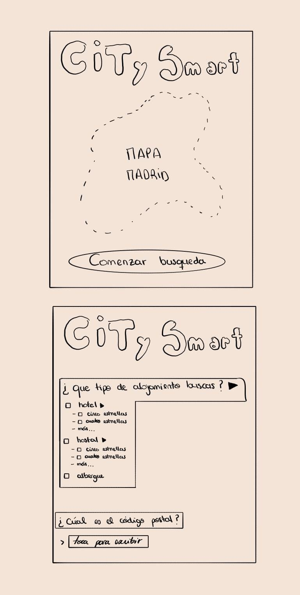
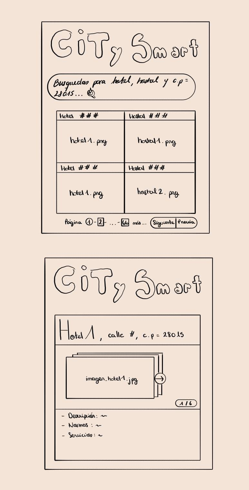

Application Requirements: Madrid Smart Tourism
General Description
The application is an interactive viewer oriented towards smart tourism. It will consume the dataset of tourist accommodations of the Community of Madrid to show the hotel supply, allowing the user to relate the resting places with the points of tourist interest and the demographic data of each municipality.
Specific Requirements
- Visualization on an interactive map of all accommodation places (hotels and hostels) through address and postal address.
- Filtering by type of establishment and postal address.
- Interactive detail card showing the accommodation information and context of the municipality.
User Interface Mock-ups
Below are the initial sketches of the main views of the web application:
Main View: Map and Filters

Detail View: Accommodation Card
